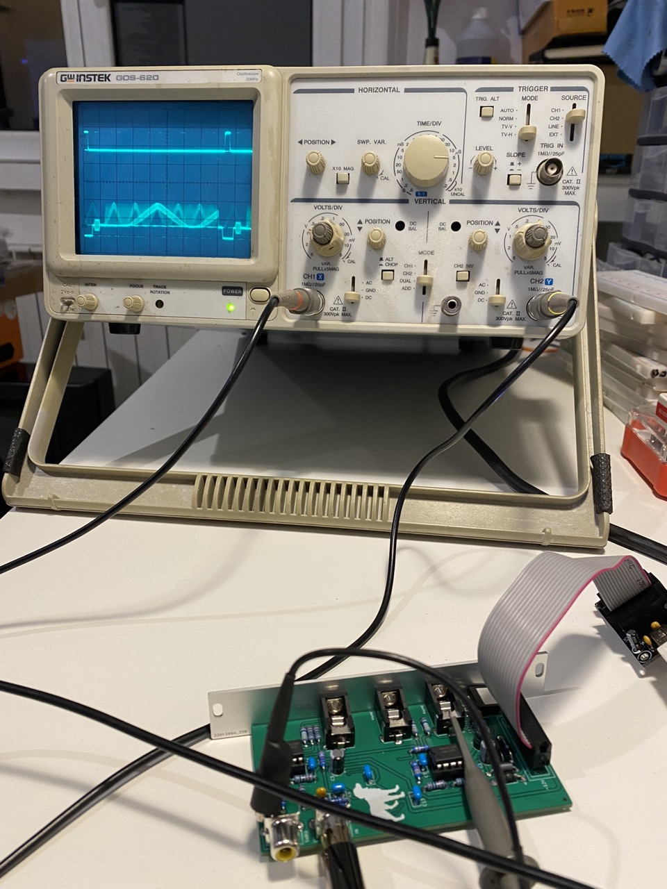
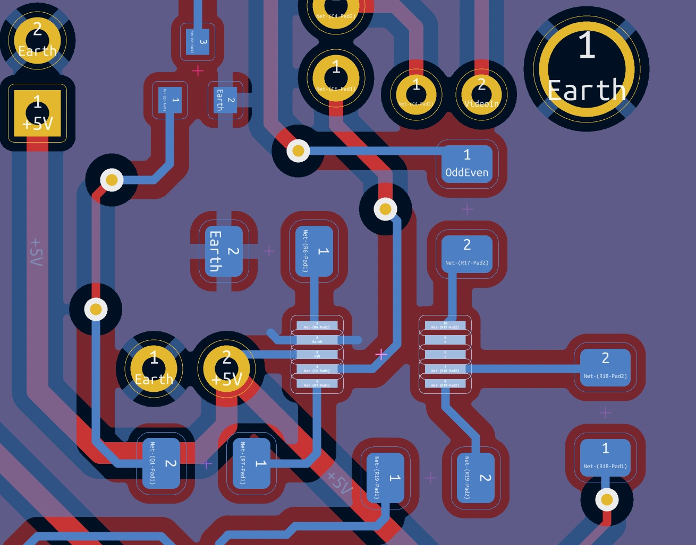

Sync Extractor
I need a sync extraction module, I want to be able to play with the sync signals and nowadays there are no modules that expose syncs.
I've been helped on LZX forum in desiging the circuit, then I've refined and draw the traces by myself.
In this project I've learned how to solder SMD components, it was scary but I did it. I've been able to solder the main chip with a simple and cheap solder station, some flux, and solder wick.
I have trained myself using those cheap training sets, it was fun!
If it's your first time soldering SMD I suggest to (remember that this is my personal experience, may not apply to your case, take your own risk):
- Train yourself using one of those kits
- Watch some tutorials about SMD soldering, like this one
- Use abundant no clean flux as the one linked above
- Use as little amount of solder as possible
- Bridges can be cleaned up with solder wick
- Check the connections with a multimeter to ensure there're no shorts
Check for shorts
The interactive BOM have the NETs embedded, is possible to check which pins are connected by clicking on the pin themselves.
On top of the BOM, the image below highlights the SMD area.
Do you sell them?
I do not plan to sell assembled units. If you are interested in PCB+Panel vist the LZX Forum Thread, we can plan a collective order.
I don't want to release the gerbers for the moment.
Do you have the schematics?
Sure! Check this thread